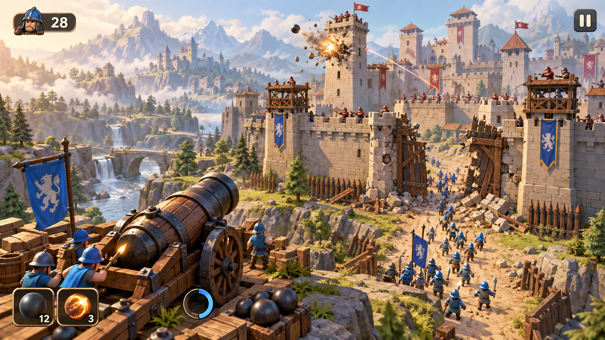
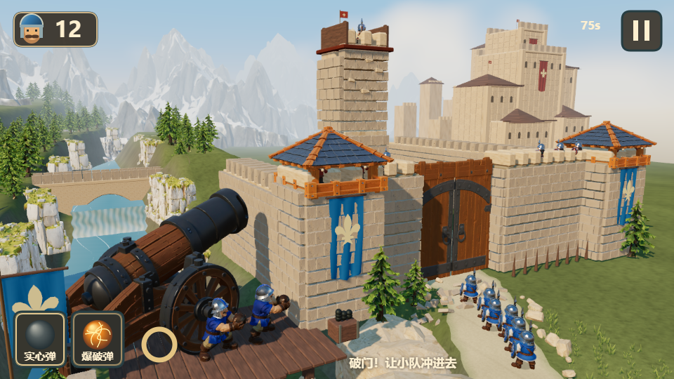
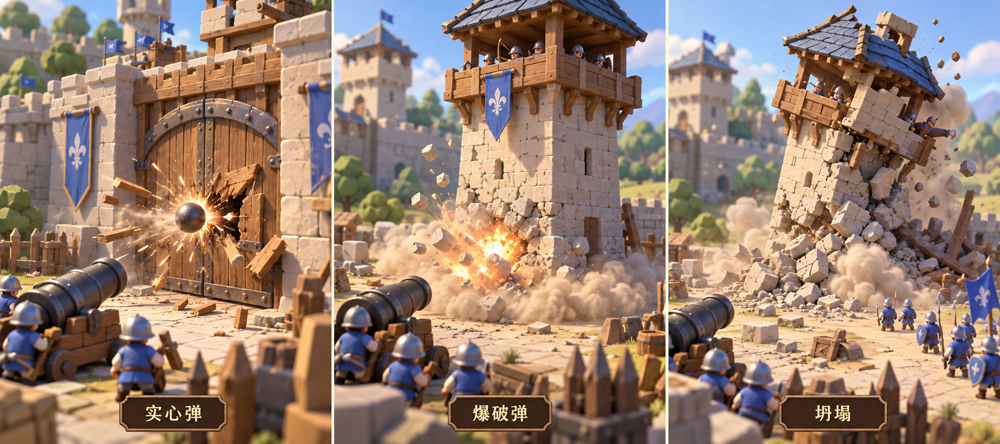
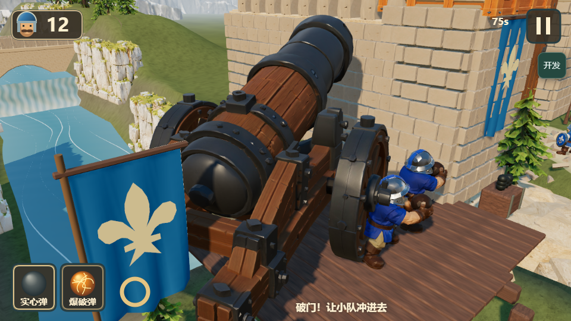
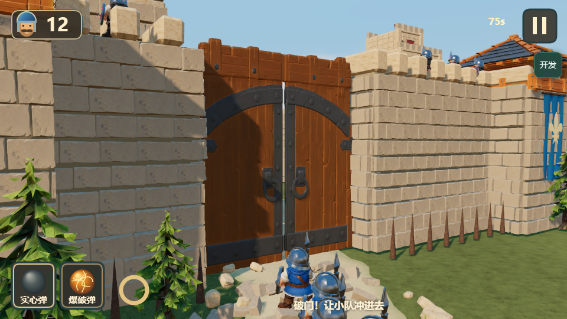
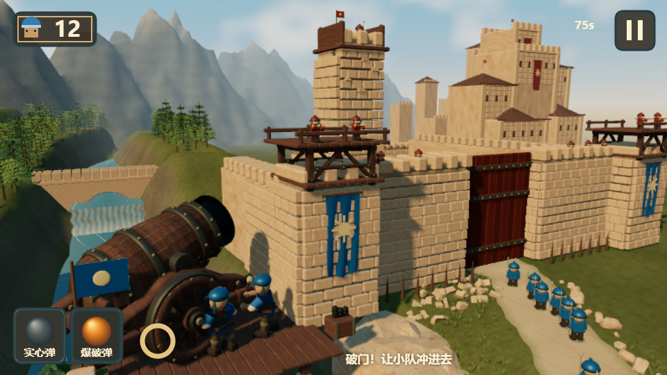

一炮拆城 · 原图与真实游戏对照
2026-10-08 ·
左侧为用户认可原图，右侧为本机实际运行。游戏画面未修图；所有城墙、角色、炮车、地形与碎片均为实时三维物体。功能通过不等于原图美术验收通过。

目标原图 · 不用于游戏背景。

真实游戏 · 开局 · 固定机位 960×540。
仍有差距：全景城池布局与原图并非完全重合；远城细节、自然地形衔接、烟尘层次和电影感光照仍较简化。固定游戏机位用于版本前后比较；下面近景为显式开发模式的审查机位。
近景资产已放回游戏


炮车：独立炮身俯仰、车架旋转、木纹、铁箍、铆钉与实际炮兵。

城门：PBR 木门、锻铁、崩角石灰岩；左右门叶使用同一资产破坏。
同机位改动前后

起点 dev 的真实画面。
本轮新模型与渲染调整。没有合入旧美术草稿分支。
资产来源、复现命令与验证说明 ·
真实时钟连续瞄准与第二炮记录 ·
同一发炮弹的峰值／结束记录